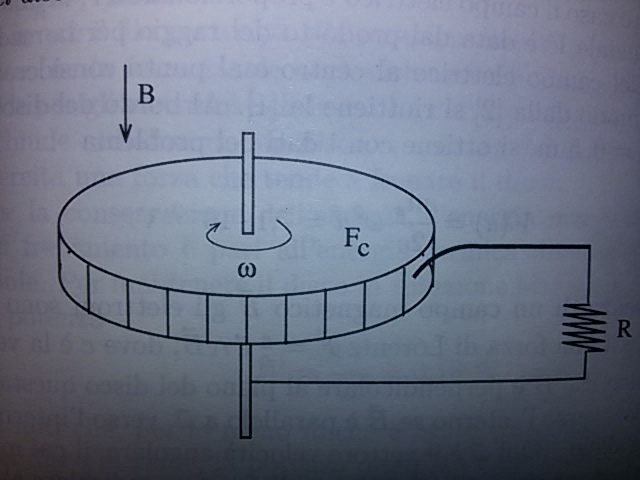

Simone2566 gen 2015, 18:05
Come giá detto il problema è più semplice dei precedenti, quindi largo a tutti coloro che vogliono provarci :)
Un disco di rame di raggio \(l\) ruota con una velocitá angolare \(\omega\) (il rame è un conduttore dove una parte degli elettroni è libera di muoversi nel reticolo cristallino rigido).
\((1)\) Calcolare la differenza di potenziale \(\Delta V\) che si instaura tra il centro e il bordo del disco;
\((2)\) Calcolare il verso e l'intensitá del campo magnetico \(B_0\) uniforme e perpendicolare al piano del disco tale che \(\Delta V=0\);
\((3)\) Ponendo ora il disco in un generico campo magnetico \(B\) sempre perpendicolare al suo piano e collegando il centro del disco alla periferia con un filo conduttore di resistenza \(R\) che non partecipa alla rotazione, determinare la potenza necessaria per mantenere in rotazione il disco alla velocitá \(\omega\);
\((4)\) Analizzare a livello microscopico la perdita di energia.
Il punto \((4)\) non c'è nel testo originale, è un bonus facoltativo. :)
-
Allegati
-

- 1420560211372-1639397266.jpg (89.55 KiB) Visto 4356 volte
Simone2568 gen 2015, 0:35
Simone256 ha scritto:\((4)\) Analizzare a livello microscopico la perdita di energia.
Per essere più chiari, analizzarla in termini di forze agenti sugli elettroni e della loro energia cinetica.
andrea9619 gen 2015, 20:50
Anche il tentativo di aprire la staffetta e tutti con un problema molto più facile degli altri pare essere fallito, quindi per non bloccare definitivamente la staffetta pubblico la soluzione.
1) Nel riferimento del disco la forza centrifuga sugli elettroni deve essere bilanciata da una forza elettrica: \(-e\vec E(r)=-m_e\omega^2\vec r\) quindi la differenza di potenziale si ottiene integrando il campo elettrico tra il centro e il bordo: \(\Delta V=\frac{1}{2}\frac{m_e}{e}\omega^2l^2\).
2) Possiamo eliminare il campo elettrico ( e quindi la differenza di potenziale ) bilanciando la forza centrifuga con una forza magnetica: \(m_e\omega\vec\omega r=e\omega r \vec B_0\) cioè \(\vec B_0=\frac{m_e}{e}\omega\)
3) Con un campo magnetico diverso all'equilibrio ci sarà anche campo elettrico: \(m_e\omega^2\vec r=e\omega\vec r B-e\vec E(r)\) quindi \(\vec E(r)=(B\omega-\frac{m_e}{e}\omega^2)\vec r\) e integrando si ottiene \(\Delta V=\frac{1}{2}(B\omega-\frac{m_e}{e}\omega^2)l^2\). Collegando quindi i due punti a quella differenza di potenziale con una resistenza, scorre corrente e viene dissipata una potenza che è necessario fornire per mantenere il disco in rotazione: \(P=\frac{V^2}{R}=\frac{(B\omega-\frac{m_e}{e}\omega^2)^2l^4}{4R}\)
4) il modello microscopico più elementare che si fa di una resistenza è quello in cui gli elettroni vengono accelerati da un campo per un tempo molto breve e poi frenati dall'urto con il reticolo della resistenza, ma su tempi "lunghi" si approssima il moto degli elettroni come un moto a velocità costante, quindi gli elettroni che entrano nella resistenza non perdono la loro energia cinetica dovuta alla rotazione, perdono invece la loro energia potenziale poichè dopo aver passato la resistenza vanno nel centro del disco dove il potenziale è inferiore di \(\Delta V\). Sia \(n\) il numero di elettroni che va nella resistenza nell'unità di tempo, allora dalla definizione di corrente \(n=\frac{\Delta V}{eR}\). Chiaramente la perdita di energia per unità di tempo (cioè la potenza) è data dalla perdita di energia di un elettrone che esce dal disco per il numero di elettroni che escono nell'unità di tempo:\(P=ne\Delta V=\frac{(\Delta V)^2}{R}\)
Simone25620 gen 2015, 17:00
Oooook vai pure col prossimo ;)